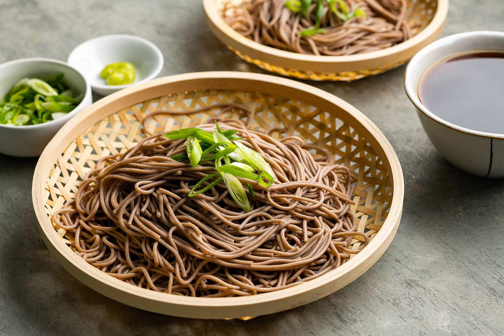

Tokyo Culture consists of a varirety of unique interests
Some Tokyo Local Food consists of the following: Sushi, Soba, Monjayaki, Fukagawa-meshi (clam rice), Dojo-nabe, Yanagawa-nabe, Chanko-nabe, and Tsukudani
Sushi originated as a way of preserving fish in fermented rice. This process took months if not years, and only the fish was eaten. With the development of rice vinegar in the 16th century came the idea of using vinegar to cure the fish for several days before eating it with rice. It wasn't until the 1800s that nigiri-zushi came into being in Edo, the city that later became Tokyo. Edo was by then a busy metropolis with a population of one million. People would grab a bite at street stalls offering foods like soba, tempura, and boxes of vinegared rice and cured fish. Then, one day, a street stall owner hit upon the idea of forming balls of vinegared rice, on which he placed pieces of fresh or lightly-seasoned fish. Two or three times the size of today's hand-formed sushi, but still quick and easy to eat, it became an instant hit, with other stalls following suit. Made with seafood from Edo Bay, this dish came to be known as "Edomae-sushi."
Soba established itself as a popular "fast food" by the mid-Edo period (18th century), and came to be a major local specialty of Tokyo. It's also one of the few dishes that the diner is encouraged to slurp. This is because slurping is believed to be the best way to appreciate the aroma of the buckwheat noodles.
Monjayaki is made with a flour-based watery batter into which shredded cabbage and other ingredients are mixed before it is all cooked on a hot griddle. The 60 or so eateries lining Tsukishima Monja Street serve everything from meat and seafood to spicy options.Its origins can be traced back to an early 19th century children's snack consisting of a simple pancake seasoned with miso or soy sauce. These pancakes were cooked on a griddle in front of sweet shops. In those days, paper and writing utensils were hard to come by. So, when children came to buy snacks, they would practice writing Japanese characters in the batter using tiny spatulas, leading to the name "mojiyaki" (or "grilled characters"), which gradually evolved into "monjayaki."
Fukagawa-meshi is a bowl of rice topped with a miso-based soup of Japanese littleneck clams, tofu, and chopped leeks. The dish originated as a kind of fast food for fishermen working in the Fukagawa area near the mouth of the Sumidagawa River, where clam gathering boomed in the Edo period. Nowadays, Fukagawa-meshi also refers to rice cooked with clams.
Dojo-nabe is a shallow pot dish lined with dojo loach (a type of freshwater fish) cooked in soy sauce-flavored broth and served with chopped scallions. Yanagawa-nabe is also a hot pot dish made with loach and cooked with burdock and eggs. Loach has been used in Japanese cuisine since the Edo period.
This hearty hot pot made with meat, seafood, and seasonal vegetables is a staple for sumo wrestlers (each sumo stable has its own recipe). Try it while watching a sumo tournament, after a visit to a sumo stable, or drop by one of the many popular specialty chanko-nabe restaurants around the city.
Tsukudani is small fish, shelled clams and lavers that are cooked and candied with ingredients such as soy sauce, mirin (sweet rice wine), and sugar. Because of its saltiness and sweetness, tsukudani is highly preservable and has been favored as a storable side dish in Japanese kitchens since the Edo period. Tsukudani is often used for onigiri (rice balls) and ochazuke (bowls of rice served in green tea or dashi soup). Its name came from the area of its origin called Tsukudajima (current Tsukuda area of Chuo City), which was the fishery center in the city of Edo.
Tokyo is an exciting place to shop for traditional Japanese crafts and textiles.
From sensu folding fans to furoshiki wrapping cloths and tenugui hand towels, traditional Japanese accessories are all compact and designed for carrying. Classic patterns and exquisite artistry present made-in-Japan charm. Colorful, beautiful kimono also make popular souvenirs to take back home.
Japanese woven and dyed goods are made using traditional tools and techniques. Textiles designated as national traditional crafts originating from Tokyo include the Murayama oshima tsumugi (silk cloth), Tokyo some komon (fine-patterned dyeing), Tokyo hand-dyed yuzen (dyeing), and Tama ori (weaving).
Tokyo is home to many galleries and workshops that showcase the beauty of traditional artisan craftwork. Galleries that collect works from across Japan display a variety of items to see and buy.
Japan has a longstanding tradition of performing arts, and Tokyo is dotted with theaters where you can enjoy them. Try some light-hearted rakugo or kyogen, or delve deep into the formal traditions of noh and kabuki. Don't worry about the language barrier—to make Japanese performing arts more accessible to foreign visitors, a number of theaters now provide multilingual assistance.
The Kabukiza Theatre quite ingeniously sets aside single-act tickets on the day of the show. This option is best for those who are hesitant to spend too much time or money on a full performance, perhaps due to an unfamiliarity with the genre. Tourists may also wish to rent subtitle guides to make better sense of what is happening on stage.
The National Noh Theatre, located just a five-minute walk from Sendagaya Station, is the perfect place to watch one of Japan's traditional performance arts. Nogaku is recognized as an Intangible Cultural Property by UNESCO and is a composed of noh and kyogen styles of theatre. Noh is an ancient Japanese musical drama characterized by the use of intricate masks and gestures in the telling of traditional stories, while kyogen is closer to a comedic performance based on wordplay. The theater, run by the Japan Arts Council, boasts a 400-year-old cypress stage, and hosts performances throughout the year. Enjoy a show with English subtitles, available at your seat with the press of a button.
Meijiza Theater was the first theater in Tokyo illuminated by electricity. Boasting state-of-the-art equipment, the theater continues to innovate and propel Japan’s theater culture, recently hosting a hybrid anime and live drama event specifically targeting tourists and non-Japanese audiences.